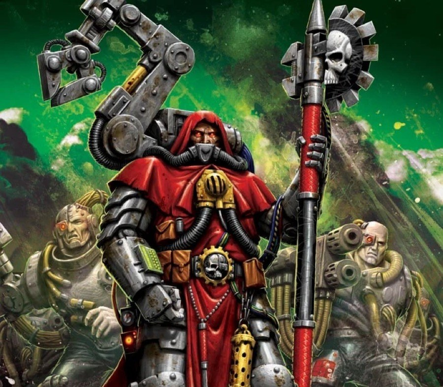

Explorator
| Explorator | |
|---|---|
| Tech-priest of the Adeptus Mechanicus | |
 A Magos Explorator of the Adeptus Mechanicus, attended by servitors Artwork © Games Workshop | |
| Organisation | Adeptus Mechanicus, the Machine Cult of Mars |
| Rank | Tech-priest; senior Explorators hold the rank of Magos or Archmagos |
| Function | Exploration of new worlds and regions; recovery of archeotech and Standard Template Construct data |
| Creed | The Quest for Knowledge of the Omnissiah |
| Companions | Servitors and Skitarii; often a Rogue Trader and crew |
| Postings | Research stations, outposts, exploration starships and Explorator fleets |
| Principal bases | Forge worlds of the Mechanicus, among them Ryza |
| Chief risks | Xenos contamination; Warp corruption; the Dark Mechanicum |
| Notable members | Arkhan Land; Archmagos Saphentis; Magos Delphan Gruss; Magos-Commodore Gnothis Trannarch |
An Explorator is a Tech-priest of the Adeptus Mechanicus who is dedicated to the exploration and exploitation of new worlds and new regions of the galaxy for the Imperium of Mankind. The Explorator is part adventurer, part warrior and part emissary of the Machine Cult of Mars. Its function is to travel into the depths of the unknown and dig up the remains of the past, to win knowledge and secrets for the glory of the Omnissiah and the benefit of the Imperium.[1][2]
Explorators are something of a breed apart in the Mechanicus. They are independent, inclined to innovate and quick to take the initiative, and some of their fellows see them as a necessary evil, while others see them as vital agents of the Machine God. They undertake the Quest for Knowledge of their god across the stars, seeking undiscovered data and unrecorded phenomena, hoards of forgotten archeotech and unknown forms of life. They are the members of the Cult Mechanicus most likely to meet the proscribed technology of the xenos, and the sins of Mankind's own hidden past.[1][3]
The lost achievements of the Dark Age of Technology go far beyond anything that can be built in the 41st millennium, and the Explorators are the means by which the Mechanicus recovers what it can. A great number of the most famous machines of the Imperium came from their expeditions, among them the Land Raider, the Land Speeder and the Razorback. The cost has been high. Explorators die in numbers in the hostile galaxy, fall to xenos dogma or to the Warp, and on rare occasions their prying has set loose horrors upon Mankind.[2][1]
An Explorator may work alone, accompany a Rogue Trader, or serve in an Explorator fleet, which is the sovereign domain of the Mechanicus. This article describes the rank and its work, the fleets, the more famous Explorators and the more famous discoveries of the order.[1]
Role and character
[edit]The Quest for Knowledge
[edit]The Explorator exists to find. The Mechanicus is secretive and guards what it knows, and it conducts a never-ending search for forgotten knowledge and ancient technology which it hoards for itself. At the head of the search stand the Explorators, who comb the stars for the technological relics of the Dark Age of Technology and for fragments of Standard Template Construct databases, the great libraries of design from which Mankind once built whatever it wished. By re-learning the lore found across the stars and piecing it together slowly, Mankind may one day rise again to the heights of the Age of Technology.[1][2]
Most of the Mechanicus holds that innovation is the height of hubris, and that setting oneself above the knowledge of the Ancients courts their deadly sins and the dark fate that ended in the Age of Strife. Explorators are more independent of mind than the followers of the Cult in more sheltered roles. They often keep their own secret agendas and arts, and many junior and provincial tech-adepts regard them as dubious outsiders, prone to stray beyond the arcane dogma of the Cult.[1]
Dangers and heresy
[edit]The work exposes an Explorator to perils that few can understand. More than a few have fallen to xenos dogma and turned from the eight universal laws of the Cult, or been corrupted by the Warp and lost their souls to Chaos, becoming heretics of the Dark Mechanicum. Others have been driven mad by knowing too much. The Mechanicus accepts these losses because of the prizes that Explorators have won, which have often been decisive in the survival of the Imperium.[1][3]
Operations
[edit]Outposts and research stations
[edit]The research stations, exploration starships and outposts of the Mechanicus that stand any distance from a Forge world are likely to be manned by Explorators. As the bionically augmented servants of the Machine God, it is their function to go into the unexplored reaches of the galaxy. They travel as a part of the great exploration and colonisation fleets that the Mechanicus supports, or they attach themselves to a Rogue Trader house that will carry them into the beyond in search of the future and, above all, the past.[1]
With a Rogue Trader
[edit]The arrangement between an Explorator and a Rogue Trader may come from an old debt which the Trader's line owed the Mechanicus, from hard bargaining or simply from chance. The Explorator is a valued member of the party in any case. He brings esoteric knowledge and technical skill beyond that of any other member of the crew, and usually a good deal of firepower. His mission is secondary to the Trader's own pursuit of profit, however, and the Explorator works within the limits that the Trader sets.[1][3]
Servitors and Skitarii
[edit]An Explorator who leads an expedition is usually accompanied by servitors, which carry the equipment, and Skitarii, which protect the party. In an Explorator fleet the retinue is far larger. The magi who command it have many serfs, servitors and adepts, and they hold as much authority over them as they would on a forge world.[1]
Explorator fleets
[edit]An Explorator fleet is the greatest expression of the exploring purpose of the Mechanicus. Where an Explorator who travels with a Rogue Trader may be distracted by the Trader's commercial interests, a tech-priest in a fleet lives among his own kind. The fleets, like the forge worlds, are the sovereign domain of the Adeptus Mechanicus, and the Mechanicus is as independent of the wider Imperial authority in them as anywhere else. In the Koronus Expanse a Rogue Trader does well to treat the magos of an Explorator fleet as a peer, since to do otherwise could be fatal.[3]
Explorator ships are among the most sophisticated in the Imperium, because they are built in the orbital yards of the forge worlds or salvaged from ancient space hulks. Tech-priests build and repair them with alloys and processes found nowhere else, so that even the newest surpass all but the best of a Rogue Trader's fleet. Many ships in a fleet are many millennia old.[3]
Explorator Fleet KX-557.V
[edit]Explorator Fleet KX-557.V was sent to explore the Halo Stars, and its route brought it into the Koronus Expanse many solar decades ago, perhaps without crossing the Koronus Passage. Since then it has had hardly any contact with the Rogue Traders of the Expanse, so far is its course from the more settled regions of Footfall and Winterscale's Realm. Its tech-priests and its gene-locked servants form a community cut off from the rest of Mankind. As of 815.M41 the fleet had had no known meeting with other Imperial forces for more than a solar decade, and its only messages to the Mechanicus of the Calixis Sector were occasional astropathic signals, many of which never arrived.[3]
The fleet consists of seven cruisers and numerous escorts, and under the command of Magos-Commodore Gnothis Trannarch aboard the monitor-cruiser Eternity Bell it seeks fragments of STC databases that the ancient human inhabitants of the Expanse may have left behind. It also tows orbital sensoria, which it leaves at worthy systems to watch over them. These stations can hold a single tech-priest and a servitor crew almost without end, but without an astropath their findings only help the Mechanicus if a ship returns to collect them. The fleet has planted four in the depths of the Expanse and has not contacted any since.[3]
War is not the function of the fleet, but it is able to defend itself and to destroy the xenos and heathen works that are too great an affront to the Omnissiah to be allowed to exist. Its cruisers mount plasma batteries, lances and stranger weapons, and it keeps large numbers of combat and murder servitors and Skitarii to repel boarders. If it faces a hopeless situation, its masters will destroy their own ships rather than let heretics or aliens take them.[3]
Notable Explorators
[edit]Arkhan Land
[edit]The technoarchaeologist Arkhan Land, one of the most famous members of the Mechanicus, found the lost STC template for a heavy armoured battle tank during the Great Crusade, on his expedition into the labyrinthine catacombs of the Librarius Omnis on Mars. The tank was called "Land's Raider" and is now the Land Raider. He also found the theory of anti-gravitic plates that led to the "Land's Speeder", now the Land Speeder, and the template of the Land Crawler, an agricultural vehicle that is now used by billions on the agri-worlds of the Imperium. He did not find the working STC database he sought, and he was killed on his second expedition into the Librarius Omnis by a psychic entity that destroyed his entire party.[4][5]
Chief Artisan Tilvius
[edit]Chief Artisan Tilvius recovered the STC template for the Razorback in the 36th millennium during an expedition across the Southern Rim of the galaxy. Records had already indicated that a troop-carrying version of the Predator had come before the Predator tank, and the Razorback fitted the description. The Lords of Mars recognised it when Tilvius returned, judged the omens good and began its construction, and in just under two hundred standard years the first Razorback was field-tested.[5]
Archmagos Saphentis
[edit]Saphentis was a senior tech-priest of the Librarium Primaris on Ryza. The Fabricator-General of Mars appointed him to lead an expedition with the Inquisition to a newly found planet in the Borosis System, which proved to be the forge world of Chaeronia, lost to the Warp a little over a century before. With Justicar Alaric of the Grey Knights, Interrogator Hawkespur and Tech-priest Thalassa, he crashed on the planet and fought through ambushes by the Dark Mechanicum to the data-fortress of the Primus Manufactorum Noctis. There he learned that the Dark Mechanicum had been building hundreds of Chaos Titans, to be delivered as tribute to Abaddon the Despoiler before the 13th Black Crusade, and Hawkespur ordered them destroyed. Saphentis killed the possessed Thalassa, and then gave his own life by overloading his bionic eyes in the face of the Heretek Archmagos Scaeros. Magos Antigonus took control of a Warhound Titan and crushed them both so that the rest of the party could leave the world and warn the Imperium.[6]
Magos Varnak
[edit]Varnak oversaw the Mechanicus outpost of Tyran Primus, the first world of Mankind to meet the full wrath of the Tyranids, in 745.M41. When the outpost fell and the command bunker was breached, he whispered a last prayer to the Omnissiah and sent a data-codex into the depths of the base. It was found some months later by the Inquisitor Kryptman, who devoted his life to opposing the Tyranids, and it gave the first vivid account of them. The Tyranids take their name from the world.[7]
Others
[edit]Magos-Commodore Gnothis Trannarch, who leads Fleet KX-557.V, has become fixed on a rumoured world in the Expanse that holds no life but keeps great buildings and machines from Mankind's past, running by automatic means. His search has brought him into conflict with Aeldari pirates. Magos Delphan Gruss, from the forge world of Arenxis Minoris, spent several solar decades in the Explorator fleets and believes in the existence of the Omnicopaeia, an artefact holding every STC blueprint of the Dark Age of Technology. He is heavily augmented, with a Breacher arm that can bore through bulkheads or through a man. Magos Paladius studied a Hellstorm cannon on Kronus that had come from the Imperator Titan Aquila Ignis of the Legio Mortis, destroyed in the Schism of Mars when the master adept Koriel Zeth flooded her own forge city with magma, and in the same study found a pre-Heresy orbital control post.[3][8]
Notable explorations
[edit]The Hrud
[edit]In the Great Crusade, in the late 30th millennium, Explorators met the xenos called the Hrud on a world in a region of space that the Aeldari had warned the Mechanicus to avoid. The Explorators did not trust the warning and entered the system anyway. The Hrud destroyed the expedition, and the Imperium classed them as a hostile species. The Iron Warriors later made a war of extermination against the Hrud warrens on Gugann that nearly destroyed the species, though Iron Warriors garrisons also suffered defeats from the Hrud migration on Krak Fiorina, Stratopolae and the fortress world of Gholgis in the last years of the crusade.[9][8]
The T'au
[edit]In the 35th millennium the Explorator starship Land's Vision found and catalogued the homeworld of the T'au. The population was then a Stone Age people who had only just mastered fire. In the six millennia that followed, they grew into a technically advanced space-faring species that is building its own empire in the Eastern Fringe, with an ideology that it calls the Greater Good.[10]
Inculaba
[edit]In 998.M41 the Explorator Magos Marco Pteronus led a dig on the dead world of Inculaba and found a long-lost geno-laboratory of the Mechanicus. It had belonged to a secret project in which Genetors tried to remove the faults from the gene-seed of the Space Marines and to make new warriors like the primarchs. The project had failed, and the flawed gene-seed had been used to make the organs of the Cursed 21st Founding of the 36th millennium. A hidden chamber held three huge incubation tanks, each containing an enormous man, of whom the third was still alive. The Inquisition sent Grey Knights, but when they arrived they found the whole expedition gone and no trace of an attacker. They bombed the site from orbit with cyclonic torpedoes and struck every record of it from the Imperial rolls.[11]
Timeline
[edit]| Date | Event |
|---|---|
| Late M30 | During the Great Crusade, Arkhan Land finds the STC templates of the Land Raider, the Land Speeder and the Land Crawler in the Librarius Omnis.[4][a] |
| Late M30 | Explorators contact the Hrud in a system that the Aeldari had warned them to avoid; the mission is destroyed.[9] |
| 005.M31 | The Schism of Mars opens the Horus Heresy; the Aquila Ignis of the Legio Mortis is destroyed in Magma City on Kronus.[8] |
| M35 | The Explorator ship Land's Vision catalogues the planet T'au.[10][b] |
| M36 | Chief Artisan Tilvius recovers the Razorback template; the Cursed 21st Founding is made.[5][11] |
| 745.M41 | Magos Varnak dies in the fall of Tyran Primus, leaving the data-codex found by Inquisitor Kryptman.[7] |
| c. 805.M41 | Explorator Fleet KX-557.V enters the Koronus Expanse about a solar decade before the last record of 815.M41.[3][c] |
| 998.M41 | Magos Pteronus finds the geno-laboratory on Inculaba; the Grey Knights bombard the site afterwards.[11] |
| c. 999.M41 | Archmagos Saphentis dies on Chaeronia as Abaddon prepares the 13th Black Crusade.[6][d] |
See also
[edit]- Adeptus Mechanicus
- Tech-priest
- Rogue Trader
- Skitarii
- Servitor
- Standard Template Construct
- Dark Age of Technology
Notes
[edit]References
[edit]- ^ a b c d e f g h i j Rogue Trader: Core Rulebook (roleplaying game). Fantasy Flight Games. pp. 52-55.
- ^ a b c Priestley, Rick. Codex Imperialis (2nd edition). Games Workshop. p. 90. Warhammer 40,000: Compendium (1st edition). Games Workshop. p. 153.
- ^ a b c d e f g h i j Rogue Trader: Stars of Inequity (roleplaying game). Fantasy Flight Games. pp. 125-128.
- ^ a b Index Astartes III. Games Workshop. "Steel Chariots: Space Marine Land Raider". Warhammer 40,000: Inquisitor Core Rulebook. Black Industries. p. 105.
- ^ a b c Index Astartes III. Games Workshop. "Steel Chariots: Space Marine Land Raider".
- ^ a b Counter, Ben. Dark Adeptus (novel). Black Library. McNeill, Graham. Mechanicus (novel). Black Library.
- ^ a b Codex: Tyranid (5th edition). Games Workshop. p. 9.
- ^ a b c Imperial Armour Volume Two: Space Marines and the Forces of the Inquisition. Forge World. pp. 49, 83, 117.
- ^ a b Xenology (background book). Games Workshop. p. 80.
- ^ a b Codex: Tau Empire (4th edition). Games Workshop.
- ^ a b c "Explorator". Warhammer 40k Wiki (Fandom). Warhammer 40,000: Planetstrike (5th edition). Games Workshop. p. 54.